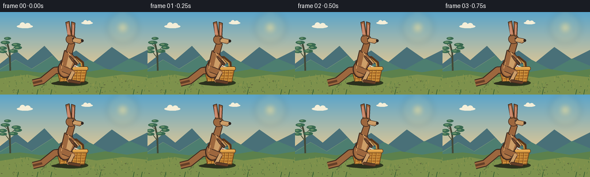
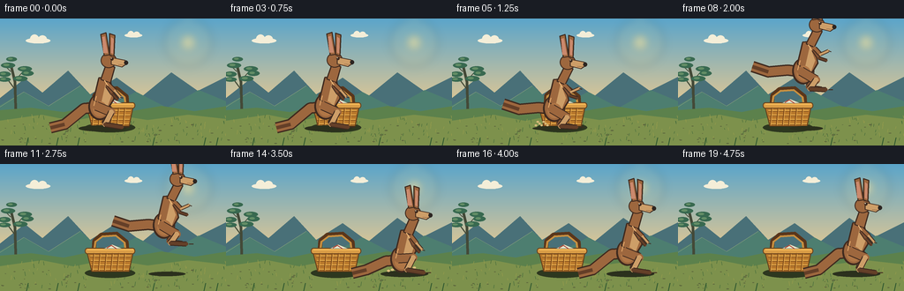

CODING AGENTS AS PIXEL WORLD MODELS
traex/GPT-5.6-Sol · dynamic_spatial_relationship_0033
点击播放 · 原生 RGB 像素
逐轮保存的候选
回放视频、检查图与代码变化。
每份候选均可单独播放。实际图片检查记录在下方工具轨迹中。
候选 01播放与检查图
点击播放 · 原生 RGB 像素


展开代码变化
--- 上一保存版本
+++ 本次保存版本
@@ -0,0 +1,253 @@
+from pathlib import Path
+import math
+import numpy as np
+from PIL import Image, ImageDraw, ImageFilter
+import artifact_io
+
+W, H, N = 256, 144, 20
+SS = 4
+rng = np.random.default_rng(3303)
+
+# Supersampled drawing helpers in scene coordinates.
+def P(xy): return tuple(int(round(v*SS)) for v in xy)
+def box(b): return tuple(int(round(v*SS)) for v in b)
+def ellipse(d, b, fill, outline=None, width=1):
+ d.ellipse(box(b), fill=fill, outline=outline, width=max(1,int(width*SS)))
+def line(d, pts, fill, width=1, joint='curve'):
+ d.line([P(p) for p in pts], fill=fill, width=max(1,int(width*SS)), joint=joint)
+def polygon(d, pts, fill, outline=None, width=1):
+ pp=[P(p) for p in pts]; d.polygon(pp, fill=fill)
+ if outline: d.line(pp+[pp[0]], fill=outline, width=max(1,int(width*SS)), joint='curve')
+def rr(d,b,r,fill,outline=None,width=1):
+ d.rounded_rectangle(box(b),radius=int(r*SS),fill=fill,outline=outline,width=max(1,int(width*SS)))
+
+# fixed texture seeds
+stars = [(rng.uniform(5,251), rng.uniform(5,72), rng.uniform(.15,.55)) for _ in range(35)]
+grass = [(rng.uniform(0,256), rng.uniform(112,142), rng.uniform(1.5,5), rng.choice([-1,1])) for _ in range(105)]
+pebbles = [(rng.uniform(0,256),rng.uniform(119,142),rng.uniform(.3,1.1)) for _ in range(48)]
+
+def background(frame):
+ # warm late-afternoon sky with very subtle changing light
+ arr=np.zeros((H*SS,W*SS,3),dtype=np.uint8)
+ top=np.array([91,165,202.],float); bot=np.array([246,205,139.],float)
+ for yy in range(H*SS):
+ y=yy/(H*SS-1); a=min(1,y/0.78)
+ col=top*(1-a)+bot*a
+ arr[yy,:,:]=np.clip(col,0,255)
+ im=Image.fromarray(arr,'RGB'); d=ImageDraw.Draw(im)
+ # soft sun glow
+ glow=Image.new('RGBA',im.size,(0,0,0,0)); gd=ImageDraw.Draw(glow)
+ for r in range(27,3,-2):
+ alpha=int(2.5*(28-r)) if r>15 else 34
+ ellipse(gd,(213-r,27-r,213+r,27+r),(255,220,132,max(5,32-alpha//2)))
+ ellipse(gd,(207,21,219,33),(255,238,170,220))
+ im=Image.alpha_composite(im.convert('RGBA'),glow.filter(ImageFilter.GaussianBlur(5*SS)))
+ d=ImageDraw.Draw(im)
+ # distant clouds
+ for cx,cy,s in [(43,25,1),(151,19,.72)]:
+ c=(244,238,216,105)
+ ellipse(d,(cx-14*s,cy-3*s,cx+14*s,cy+3*s),c)
+ ellipse(d,(cx-9*s,cy-7*s,cx+1*s,cy+3*s),c)
+ ellipse(d,(cx,cy-6*s,cx+10*s,cy+3*s),c)
+ # distant blue ridges
+ polygon(d,[(-5,94),(28,68),(48,84),(77,59),(102,86),(132,67),(161,88),(194,61),(224,82),(264,62),(264,112),(-5,112)],(73,112,120,255))
+ polygon(d,[(-5,101),(27,83),(55,99),(91,76),(119,101),(154,83),(189,101),(225,81),(264,97),(264,116),(-5,116)],(77,126,112,255))
+ # highlight ridge edges
+ line(d,[(0,100),(27,83),(55,99),(91,76)],(132,157,125,160),.6)
+ # eucalyptus at far left for Australian character
+ line(d,[(18,110),(17,72),(12,51)],(67,73,55,255),3)
+ line(d,[(16,79),(7,67)],(67,73,55,255),1.3)
+ line(d,[(16,71),(27,59)],(67,73,55,255),1.3)
+ line(d,[(12,60),(5,53)],(67,73,55,255),1)
+ for x,y,rx,ry in [(5,63,7,3),(9,53,8,3),(28,57,8,3),(31,62,7,3),(5,69,7,2.5),(23,68,8,3),(13,46,6,2.5)]:
+ ellipse(d,(x-rx,y-ry,x+rx,y+ry),(56,105,80,245))
+ ellipse(d,(x-rx*.65,y-ry*.55,x+rx*.2,y+ry*.25),(100,142,102,170))
+ # ground layers
+ polygon(d,[(-2,104),(35,101),(72,106),(106,99),(148,105),(183,99),(220,105),(258,99),(258,146),(-2,146)],(92,129,76,255))
+ polygon(d,[(-2,116),(47,109),(83,116),(123,108),(167,115),(213,109),(258,114),(258,146),(-2,146)],(125,145,76,255))
+ # grasses and pebbles
+ for x,y,h,sgn in grass:
+ c=(61,102,57,210) if int(x)%3 else (155,157,76,190)
+ line(d,[(x,y),(x+sgn*.7,y-h)],c,.55)
+ for x,y,r in pebbles:
+ ellipse(d,(x-r*1.6,y-r*.55,x+r*1.6,y+r*.55),(94,105,62,150))
+ return im
+
+def draw_basket(im):
+ """Stationary woven picnic basket, deliberately behind the kangaroo."""
+ d=ImageDraw.Draw(im,'RGBA')
+ # cast shadow
+ ellipse(d,(96,118,153,129),(45,55,31,65))
+ # rear handle (must precede body and kangaroo)
+ line(d,[(106,103),(107,87),(115,80),(132,79),(143,88),(144,104)],(90,54,27,255),5)
+ line(d,[(106,102),(108,88),(116,82),(131,81),(141,89),(143,104)],(199,143,64,255),2.4)
+ # basket body silhouette
+ polygon(d,[(98,98),(151,98),(146,122),(104,122)],(183,119,43,255),(92,57,25,255),1.2)
+ rr(d,(96,95,153,102),3,(218,157,70,255),(103,65,28,255),1)
+ # weave bands
+ for yy in [104,109,114,119]:
+ line(d,[(102+(yy-101)*.12,yy),(148-(yy-101)*.12,yy)],(235,176,79,210),1)
+ line(d,[(102,yy+1),(148,yy+1)],(115,70,27,180),.55)
+ for xx in range(106,148,7):
+ line(d,[(xx,101),(xx-2,121)],(126,75,28,190),1)
+ line(d,[(xx+1,102),(xx-1,121)],(242,182,84,120),.55)
+ # rim shine and cloth peeking out
+ line(d,[(99,97),(151,97)],(250,190,91,255),1.4)
+ polygon(d,[(117,96),(127,91),(139,96)],(225,230,204,255),(120,113,91,180),.5)
+ line(d,[(121,95),(126,92),(132,96)],(177,70,57,210),1)
+
+def capsule(d,a,b,width,fill,outline=(83,50,31,255)):
+ line(d,[a,b],outline,width+2)
+ line(d,[a,b],fill,width)
+ r=width/2
+ ellipse(d,(a[0]-r,a[1]-r,a[0]+r,a[1]+r),fill)
+ ellipse(d,(b[0]-r,b[1]-r,b[0]+r,b[1]+r),fill)
+
+def draw_kangaroo(im, x, ground_y, pose, airborne, breath=0):
+ """Friendly, anatomically recognizable side-view eastern grey kangaroo."""
+ d=ImageDraw.Draw(im,'RGBA')
+ outline=(63,42,31,255); dark=(100,63,40,255); fur=(157,103,62,255)
+ light=(205,158,104,255); pale=(225,185,130,255); nose=(44,37,33,255)
+ # pose ranges: stand, crouch, flight, land
+ if pose=='stand':
+ torso_y=ground_y-40+breath; lean=0; tuck=0
+ elif pose=='crouch':
+ torso_y=ground_y-31; lean=7; tuck=1
+ elif pose=='flight':
+ torso_y=ground_y-38; lean=9; tuck=1
+ else: # land
+ torso_y=ground_y-32; lean=5; tuck=.5
+ rump=(x-4,torso_y+16)
+ shoulder=(x+3+lean*.25,torso_y-12)
+ # tail behind the body, long tapered counterbalance
+ if airborne:
+ tail_pts=[(rump[0]-1,rump[1]+1),(x-21,torso_y+15),(x-43,torso_y+17),(x-61,torso_y+11)]
+ elif pose=='crouch':
+ tail_pts=[(rump[0],rump[1]+1),(x-23,torso_y+15),(x-46,ground_y-2),(x-62,ground_y)]
+ else:
+ tail_pts=[(rump[0],rump[1]+1),(x-21,torso_y+18),(x-43,ground_y-4),(x-59,ground_y)]
+ line(d,tail_pts,outline,13)
+ line(d,tail_pts,fur,10)
+ # tapered tail tip overdraw
+ line(d,[tail_pts[-2],tail_pts[-1]],dark,4)
+ # far hind leg first
+ if airborne:
+ hip=(x-4,torso_y+14); knee=(x+8,torso_y+25); ankle=(x+2,torso_y+34); toe=(x+17,torso_y+36)
+ elif pose=='crouch':
+ hip=(x-5,torso_y+13); knee=(x+12,ground_y-10); ankle=(x-1,ground_y-4); toe=(x+13,ground_y)
+ else:
+ hip=(x-5,torso_y+13); knee=(x+8,ground_y-20); ankle=(x+2,ground_y-5); toe=(x+18,ground_y-1)
+ capsule(d,hip,knee,8,(126,80,50,255),outline)
+ capsule(d,knee,ankle,5,(134,86,53,255),outline)
+ capsule(d,ankle,toe,3.7,dark,outline)
+ # body: strong haunch + tapering chest
+ ellipse(d,(x-16,torso_y+1,x+9,torso_y+31),outline)
+ ellipse(d,(x-14,torso_y+2,x+8,torso_y+29),fur)
+ polygon(d,[(x-10,torso_y+8),(x-4,torso_y-17),(x+8,torso_y-18),(x+13,torso_y+7),(x+5,torso_y+20)],fur,outline,1.6)
+ # belly/chest glow
+ polygon(d,[(x+4,torso_y-12),(x+10,torso_y+4),(x+4,torso_y+20),(x-1,torso_y+10)],light)
+ ellipse(d,(x-11,torso_y+10,x+5,torso_y+27),(176,118,70,210))
+ # near powerful hind leg
+ if airborne:
+ hip2=(x-6,torso_y+16); knee2=(x+11,torso_y+26); ankle2=(x+4,torso_y+36); toe2=(x+22,torso_y+37)
+ elif pose=='crouch':
+ hip2=(x-7,torso_y+15); knee2=(x+12,ground_y-11); ankle2=(x-4,ground_y-3); toe2=(x+14,ground_y)
+ else:
+ hip2=(x-7,torso_y+15); knee2=(x+10,ground_y-18); ankle2=(x+3,ground_y-4); toe2=(x+22,ground_y-1)
+ capsule(d,hip2,knee2,9,fur,outline)
+ capsule(d,knee2,ankle2,5.5,light,outline)
+ capsule(d,ankle2,toe2,4,dark,outline)
+ line(d,[(toe2[0]+3,toe2[1]),(toe2[0]+8,toe2[1])],outline,1.1)
+ # neck
+ polygon(d,[(x-2+lean*.2,torso_y-15),(x+4+lean*.5,torso_y-32),(x+14+lean*.45,torso_y-29),(x+9,torso_y-11)],fur,outline,1.4)
+ # arms (small, characteristic), rear then front
+ sh=(x+6+lean*.35,torso_y-10)
+ if airborne:
+ elbow=(x+16,torso_y-3); wrist=(x+25,torso_y-7)
+ elbow2=(x+14,torso_y+1); wrist2=(x+23,torso_y+4)
+ elif pose=='crouch':
+ elbow=(x+17,torso_y-3); wrist=(x+23,torso_y+4)
+ elbow2=(x+13,torso_y+2); wrist2=(x+20,torso_y+8)
+ else:
+ elbow=(x+14,torso_y-2); wrist=(x+20,torso_y+5)
+ elbow2=(x+11,torso_y+1); wrist2=(x+17,torso_y+8)
+ capsule(d,(sh[0]-1,sh[1]+2),elbow2,3,(129,82,52,255),outline)
+ capsule(d,elbow2,wrist2,2.2,dark,outline)
+ capsule(d,sh,elbow,3.5,fur,outline)
+ capsule(d,elbow,wrist,2.3,light,outline)
+ line(d,[wrist,(wrist[0]+3,wrist[1]+1)],outline,1)
+ # head, muzzle facing right
+ hx=x+7+lean*.55; hy=torso_y-37
+ ellipse(d,(hx-9,hy-8,hx+9,hy+9),outline)
+ ellipse(d,(hx-8,hy-7,hx+8,hy+8),fur)
+ # long muzzle
+ polygon(d,[(hx+3,hy-3),(hx+18,hy),(hx+21,hy+4),(hx+15,hy+8),(hx+3,hy+5)],light,outline,1.2)
+ ellipse(d,(hx+17.5,hy+.5,hx+22,hy+5.5),nose)
+ # ears, tall and unmistakable
+ polygon(d,[(hx-5,hy-5),(hx-9,hy-29),(hx-3,hy-31),(hx+1,hy-6)],fur,outline,1.3)
+ polygon(d,[(hx+1,hy-6),(hx+1,hy-30),(hx+7,hy-28),(hx+6,hy-4)],fur,outline,1.3)
+ polygon(d,[(hx-6,hy-8),(hx-7.5,hy-26),(hx-4.5,hy-27),(hx-1,hy-8)],(203,137,109,255))
+ polygon(d,[(hx+2.5,hy-8),(hx+2.8,hy-26),(hx+5.5,hy-24),(hx+5,hy-7)],(203,137,109,255))
+ # eye, brow and smile
+ ellipse(d,(hx+2,hy-3,hx+5.4,hy+.4),outline)
+ ellipse(d,(hx+2.6,hy-2.6,hx+3.5,hy-1.7),(255,245,212,255))
+ line(d,[(hx+1,hy-5),(hx+6,hy-4)],dark,1)
+ line(d,[(hx+11,hy+5),(hx+17,hy+5.5)],(94,51,37,220),.7)
+ # shoulder/rump highlights for volume
+ line(d,[(x-7,torso_y+4),(x-10,torso_y+15)],(225,166,105,145),1.2)
+ line(d,[(x+2,torso_y-14),(x+6,torso_y-8)],(236,183,119,120),1)
+
+
+def trajectory(i):
+ # Hold the first relation, anticipation, leap, and a readable final hold.
+ if i <= 3:
+ return 116, 124, 'stand', False
+ if i == 4:
+ return 116, 124, 'crouch', False
+ if 5 <= i <= 13:
+ t=(i-5)/8
+ x=119 + (202-119)*(3*t*t-2*t*t*t)
+ # launch foot reference rises in a generous parabolic arc
+ gy=124 - 46*math.sin(math.pi*t)
+ return x,gy,'flight',True
+ if i == 14:
+ return 202,124,'land',False
+ return 202,124,'stand',False
+
+def render(i):
+ im=background(i)
+ draw_basket(im)
+ d=ImageDraw.Draw(im,'RGBA')
+ x,gy,pose,air=trajectory(i)
+ # grounding shadow communicates the leap and persistent screen-plane relation
+ if air:
+ altitude=max(0,124-gy)
+ sw=28-altitude*.22
+ alpha=int(65-altitude*.65)
+ ellipse(d,(x-sw,122,x+sw,127),(43,48,29,max(20,alpha)))
+ else:
+ sw=27 if pose!='crouch' else 32
+ ellipse(d,(x-sw,121,x+sw,128),(43,48,29,74))
+ # launch/landing dust
+ if i in (5,6):
+ for k in range(7):
+ xx=108-k*2.2; yy=121-(k%3)*2
+ ellipse(d,(xx-1.4,yy-1,xx+1.4,yy+1),(216,187,123,110))
+ if i in (14,15):
+ for k in range(9):
+ xx=184+k*4.2; yy=121-(k%4)*1.2
+ ellipse(d,(xx-1.7,yy-1.2,xx+1.7,yy+1.2),(220,190,126,100))
+ breath=math.sin(i*1.6)*.45 if pose=='stand' else 0
+ draw_kangaroo(im,x,gy,pose,air,breath)
+ # subtle foreground blades overlap feet for depth
+ d=ImageDraw.Draw(im,'RGBA')
+ for xx in [30,64,88,173,231,245]:
+ line(d,[(xx,144),(xx+2,135)],(45,86,47,150),1)
+ return np.asarray(im.convert('RGB').resize((W,H),Image.Resampling.LANCZOS),dtype=np.uint8)
+
+def main():
+ frames=np.stack([render(i) for i in range(N)],axis=0)
+ artifact_io.save(frames,Path(__file__).resolve().parent)
+
+if __name__=='__main__':
+ main()
可观测工具轨迹
实际执行的命令与返回图片。
命令 1exit 0
/bin/bash -lc "cat prompt.txt && printf '\\n--- RULES ---\\n' && cat GENERATION_RULES.md && printf '\\n--- SPEC ---\\n' && cat task_spec.json"
命令 2exit 0
/bin/bash -lc "find . -maxdepth 2 -type f -printf '%p\\n' | sort"
命令 3exit 0
/bin/bash -lc 'cat artifact_io.py'
命令 4exit 0
/bin/bash -lc "cat > generate.py <<'PY'
from pathlib import Path
import math
import numpy as np
from PIL import Image, ImageDraw, ImageFilter
import artifact_io
W, H, N = 256, 144, 20
SS = 4
rng = np.random.default_rng(3303)
# Supersampled drawing helpers in scene coordinates.
def P(xy): return tuple(int(round(v*SS)) for v in xy)
def box(b): return tuple(int(round(v*SS)) for v in b)
def ellipse(d, b, fill, outline=None, width=1):
d.ellipse(box(b), fill=fill, outline=outline, width=max(1,int(width*SS)))
def line(d, pts, fill, width=1, joint='curve'):
d.line([P(p) for p in pts], fill=fill, width=max(1,int(width*SS)), joint=joint)
def polygon(d, pts, fill, outline=None, width=1):
pp=[P(p) for p in pts]; d.polygon(pp, fill=fill)
if outline: d.line(pp+[pp[0]], fill=outline, width=max(1,int(width*SS)), joint='curve')
def rr(d,b,r,fill,outline=None,width=1):
d.rounded_rectangle(box(b),radius=int(r*SS),fill=fill,outline=outline,width=max(1,int(width*SS)))
# fixed texture seeds
stars = [(rng.uniform(5,251), rng.uniform(5,72), rng.uniform(.15,.55)) for _ in range(35)]
grass = [(rng.uniform(0,256), rng.uniform(112,142), rng.uniform(1.5,5), rng.choice([-1,1])) for _ in range(105)]
pebbles = [(rng.uniform(0,256),rng.uniform(119,142),rng.uniform(.3,1.1)) for _ in range(48)]
def background(frame):
# warm late-afternoon sky with very subtle changing light
arr=np.zeros((H*SS,W*SS,3),dtype=np.uint8)
top=np.array([91,165,202.],float); bot=np.array([246,205,139.],float)
for yy in range(H*SS):
y=yy/(H*SS-1); a=min(1,y/0.78)
col=top*(1-a)+bot*a
arr[yy,:,:]=np.clip(col,0,255)
im=Image.fromarray(arr,'RGB'); d=ImageDraw.Draw(im)
# soft sun glow
glow=Image.new('RGBA',im.size,(0,0,0,0)); gd=ImageDraw.Draw(glow)
for r in range(27,3,-2):
alpha=int(2.5*(28-r)) if r>15 else 34
ellipse(gd,(213-r,27-r,213+r,27+r),(255,220,132,max(5,32-alpha//2)))
ellipse(gd,(207,21,219,33),(255,238,170,220))
im=Image.alpha_composite(im.convert('RGBA'),glow.filter(ImageFilter.GaussianBlur(5*SS)))
d=ImageDraw.Draw(im)
# distant clouds
for cx,cy,s in [(43,25,1),(151,19,.72)]:
c=(244,238,216,105)
ellipse(d,(cx-14*s,cy-3*s,cx+14*s,cy+3*s),c)
ellipse(d,(cx-9*s,cy-7*s,cx+1*s,cy+3*s),c)
ellipse(d,(cx,cy-6*s,cx+10*s,cy+3*s),c)
# distant blue ridges
polygon(d,[(-5,94),(28,68),(48,84),(77,59),(102,86),(132,67),(161,88),(194,61),(224,82),(264,62),(264,112),(-5,112)],(73,112,120,255))
polygon(d,[(-5,101),(27,83),(55,99),(91,76),(119,101),(154,83),(189,101),(225,81),(264,97),(264,116),(-5,116)],(77,126,112,255))
# highlight ridge edges
line(d,[(0,100),(27,83),(55,99),(91,76)],(132,157,125,160),.6)
# eucalyptus at far left for Australian character
line(d,[(18,110),(17,72),(12,51)],(67,73,55,255),3)
line(d,[(16,79),(7,67)],(67,73,55,255),1.3)
line(d,[(16,71),(27,59)],(67,73,55,255),1.3)
line(d,[(12,60),(5,53)],(67,73,55,255),1)
for x,y,rx,ry in [(5,63,7,3),(9,53,8,3),(28,57,8,3),(31,62,7,3),(5,69,7,2.5),(23,68,8,3),(13,46,6,2.5)]:
ellipse(d,(x-rx,y-ry,x+rx,y+ry),(56,105,80,245))
ellipse(d,(x-rx*.65,y-ry*.55,x+rx*.2,y+ry*.25),(100,142,102,170))
# ground layers
polygon(d,[(-2,104),(35,101),(72,106),(106,99),(148,105),(183,99),(220,105),(258,99),(258,146),(-2,146)],(92,129,76,255))
polygon(d,[(-2,116),(47,109),(83,116),(123,108),(167,115),(213,109),(258,114),(258,146),(-2,146)],(125,145,76,255))
# grasses and pebbles
for x,y,h,sgn in grass:
c=(61,102,57,210) if int(x)%3 else (155,157,76,190)
line(d,[(x,y),(x+sgn*.7,y-h)],c,.55)
for x,y,r in pebbles:
ellipse(d,(x-r*1.6,y-r*.55,x+r*1.6,y+r*.55),(94,105,62,150))
return im
def draw_basket(im):
\"\"\"Stationary woven picnic basket, deliberately behind the kangaroo.\"\"\"
d=ImageDraw.Draw(im,'RGBA')
# cast shadow
ellipse(d,(96,118,153,129),(45,55,31,65))
# rear handle (must precede body and kangaroo)
line(d,[(106,103),(107,87),(115,80),(132,79),(143,88),(144,104)],(90,54,27,255),5)
line(d,[(106,102),(108,88),(116,82),(131,81),(141,89),(143,104)],(199,143,64,255),2.4)
# basket body silhouette
polygon(d,[(98,98),(151,98),(146,122),(104,122)],(183,119,43,255),(92,57,25,255),1.2)
rr(d,(96,95,153,102),3,(218,157,70,255),(103,65,28,255),1)
# weave bands
for yy in [104,109,114,119]:
line(d,[(102+(yy-101)*.12,yy),(148-(yy-101)*.12,yy)],(235,176,79,210),1)
line(d,[(102,yy+1),(148,yy+1)],(115,70,27,180),.55)
for xx in range(106,148,7):
line(d,[(xx,101),(xx-2,121)],(126,75,28,190),1)
line(d,[(xx+1,102),(xx-1,121)],(242,182,84,120),.55)
# rim shine and cloth peeking out
line(d,[(99,97),(151,97)],(250,190,91,255),1.4)
polygon(d,[(117,96),(127,91),(139,96)],(225,230,204,255),(120,113,91,180),.5)
line(d,[(121,95),(126,92),(132,96)],(177,70,57,210),1)
def capsule(d,a,b,width,fill,outline=(83,50,31,255)):
line(d,[a,b],outline,width+2)
line(d,[a,b],fill,width)
r=width/2
ellipse(d,(a[0]-r,a[1]-r,a[0]+r,a[1]+r),fill)
ellipse(d,(b[0]-r,b[1]-r,b[0]+r,b[1]+r),fill)
def draw_kangaroo(im, x, ground_y, pose, airborne, breath=0):
\"\"\"Friendly, anatomically recognizable side-view eastern grey kangaroo.\"\"\"
d=ImageDraw.Draw(im,'RGBA')
outline=(63,42,31,255); dark=(100,63,40,255); fur=(157,103,62,255)
light=(205,158,104,255); pale=(225,185,130,255); nose=(44,37,33,255)
# pose ranges: stand, crouch, flight, land
if pose=='stand':
torso_y=ground_y-40+breath; lean=0; tuck=0
elif pose=='crouch':
torso_y=ground_y-31; lean=7; tuck=1
elif pose=='flight':
torso_y=ground_y-38; lean=9; tuck=1
else: # land
torso_y=ground_y-32; lean=5; tuck=.5
rump=(x-4,torso_y+16)
shoulder=(x+3+lean*.25,torso_y-12)
# tail behind the body, long tapered counterbalance
if airborne:
tail_pts=[(rump[0]-1,rump[1]+1),(x-21,torso_y+15),(x-43,torso_y+17),(x-61,torso_y+11)]
elif pose=='crouch':
tail_pts=[(rump[0],rump[1]+1),(x-23,torso_y+15),(x-46,ground_y-2),(x-62,ground_y)]
else:
tail_pts=[(rump[0],rump[1]+1),(x-21,torso_y+18),(x-43,ground_y-4),(x-59,ground_y)]
line(d,tail_pts,outline,13)
line(d,tail_pts,fur,10)
# tapered tail tip overdraw
line(d,[tail_pts[-2],tail_pts[-1]],dark,4)
# far hind leg first
if airborne:
hip=(x-4,torso_y+14); knee=(x+8,torso_y+25); ankle=(x+2,torso_y+34); toe=(x+17,torso_y+36)
elif pose=='crouch':
hip=(x-5,torso_y+13); knee=(x+12,ground_y-10); ankle=(x-1,ground_y-4); toe=(x+13,ground_y)
else:
hip=(x-5,torso_y+13); knee=(x+8,ground_y-20); ankle=(x+2,ground_y-5); toe=(x+18,ground_y-1)
capsule(d,hip,knee,8,(126,80,50,255),outline)
capsule(d,knee,ankle,5,(134,86,53,255),outline)
capsule(d,ankle,toe,3.7,dark,outline)
# body: strong haunch + tapering chest
ellipse(d,(x-16,torso_y+1,x+9,torso_y+31),outline)
ellipse(d,(x-14,torso_y+2,x+8,torso_y+29),fur)
polygon(d,[(x-10,torso_y+8),(x-4,torso_y-17),(x+8,torso_y-18),(x+13,torso_y+7),(x+5,torso_y+20)],fur,outline,1.6)
# belly/chest glow
polygon(d,[(x+4,torso_y-12),(x+10,torso_y+4),(x+4,torso_y+20),(x-1,torso_y+10)],light)
ellipse(d,(x-11,torso_y+10,x+5,torso_y+27),(176,118,70,210))
# near powerful hind leg
if airborne:
hip2=(x-6,torso_y+16); knee2=(x+11,torso_y+26); ankle2=(x+4,torso_y+36); toe2=(x+22,torso_y+37)
elif pose=='crouch':
hip2=(x-7,torso_y+15); knee2=(x+12,ground_y-11); ankle2=(x-4,ground_y-3); toe2=(x+14,ground_y)
else:
hip2=(x-7,torso_y+15); knee2=(x+10,ground_y-18); ankle2=(x+3,ground_y-4); toe2=(x+22,ground_y-1)
capsule(d,hip2,knee2,9,fur,outline)
capsule(d,knee2,ankle2,5.5,light,outline)
capsule(d,ankle2,toe2,4,dark,outline)
line(d,[(toe2[0]+3,toe2[1]),(toe2[0]+8,toe2[1])],outline,1.1)
# neck
polygon(d,[(x-2+lean*.2,torso_y-15),(x+4+lean*.5,torso_y-32),(x+14+lean*.45,torso_y-29),(x+9,torso_y-11)],fur,outline,1.4)
# arms (small, characteristic), rear then front
sh=(x+6+lean*.35,torso_y-10)
if airborne:
elbow=(x+16,torso_y-3); wrist=(x+25,torso_y-7)
elbow2=(x+14,torso_y+1); wrist2=(x+23,torso_y+4)
elif pose=='crouch':
elbow=(x+17,torso_y-3); wrist=(x+23,torso_y+4)
elbow2=(x+13,torso_y+2); wrist2=(x+20,torso_y+8)
else:
elbow=(x+14,torso_y-2); wrist=(x+20,torso_y+5)
elbow2=(x+11,torso_y+1); wrist2=(x+17,torso_y+8)
capsule(d,(sh[0]-1,sh[1]+2),elbow2,3,(129,82,52,255),outline)
capsule(d,elbow2,wrist2,2.2,dark,outline)
capsule(d,sh,elbow,3.5,fur,outline)
capsule(d,elbow,wrist,2.3,light,outline)
line(d,[wrist,(wrist[0]+3,wrist[1]+1)],outline,1)
# head, muzzle facing right
hx=x+7+lean*.55; hy=torso_y-37
ellipse(d,(hx-9,hy-8,hx+9,hy+9),outline)
ellipse(d,(hx-8,hy-7,hx+8,hy+8),fur)
# long muzzle
polygon(d,[(hx+3,hy-3),(hx+18,hy),(hx+21,hy+4),(hx+15,hy+8),(hx+3,hy+5)],light,outline,1.2)
ellipse(d,(hx+17.5,hy+.5,hx+22,hy+5.5),nose)
# ears, tall and unmistakable
polygon(d,[(hx-5,hy-5),(hx-9,hy-29),(hx-3,hy-31),(hx+1,hy-6)],fur,outline,1.3)
polygon(d,[(hx+1,hy-6),(hx+1,hy-30),(hx+7,hy-28),(hx+6,hy-4)],fur,outline,1.3)
polygon(d,[(hx-6,hy-8),(hx-7.5,hy-26),(hx-4.5,hy-27),(hx-1,hy-8)],(203,137,109,255))
polygon(d,[(hx+2.5,hy-8),(hx+2.8,hy-26),(hx+5.5,hy-24),(hx+5,hy-7)],(203,137,109,255))
# eye, brow and smile
ellipse(d,(hx+2,hy-3,hx+5.4,hy+.4),outline)
ellipse(d,(hx+2.6,hy-2.6,hx+3.5,hy-1.7),(255,245,212,255))
line(d,[(hx+1,hy-5),(hx+6,hy-4)],dark,1)
line(d,[(hx+11,hy+5),(hx+17,hy+5.5)],(94,51,37,220),.7)
# shoulder/rump highlights for volume
line(d,[(x-7,torso_y+4),(x-10,torso_y+15)],(225,166,105,145),1.2)
line(d,[(x+2,torso_y-14),(x+6,torso_y-8)],(236,183,119,120),1)
def trajectory(i):
# Hold the first relation, anticipation, leap, and a readable final hold.
if i <= 3:
return 116, 124, 'stand', False
if i == 4:
return 116, 124, 'crouch', False
if 5 <= i <= 13:
t=(i-5)/8
x=119 + (202-119)*(3*t*t-2*t*t*t)
# launch foot reference rises in a generous parabolic arc
gy=124 - 46*math.sin(math.pi*t)
return x,gy,'flight',True
if i == 14:
return 202,124,'land',False
return 202,124,'stand',False
def render(i):
im=background(i)
draw_basket(im)
d=ImageDraw.Draw(im,'RGBA')
x,gy,pose,air=trajectory(i)
# grounding shadow communicates the leap and persistent screen-plane relation
if air:
altitude=max(0,124-gy)
sw=28-altitude*.22
alpha=int(65-altitude*.65)
ellipse(d,(x-sw,122,x+sw,127),(43,48,29,max(20,alpha)))
else:
sw=27 if pose"'!='"'crouch' else 32
ellipse(d,(x-sw,121,x+sw,128),(43,48,29,74))
# launch/landing dust
if i in (5,6):
for k in range(7):
xx=108-k*2.2; yy=121-(k%3)*2
ellipse(d,(xx-1.4,yy-1,xx+1.4,yy+1),(216,187,123,110))
if i in (14,15):
for k in range(9):
xx=184+k*4.2; yy=121-(k%4)*1.2
ellipse(d,(xx-1.7,yy-1.2,xx+1.7,yy+1.2),(220,190,126,100))
breath=math.sin(i*1.6)*.45 if pose=='stand' else 0
draw_kangaroo(im,x,gy,pose,air,breath)
# subtle foreground blades overlap feet for depth
d=ImageDraw.Draw(im,'RGBA')
for xx in [30,64,88,173,231,245]:
line(d,[(xx,144),(xx+2,135)],(45,86,47,150),1)
return np.asarray(im.convert('RGB').resize((W,H),Image.Resampling.LANCZOS),dtype=np.uint8)
def main():
frames=np.stack([render(i) for i in range(N)],axis=0)
artifact_io.save(frames,Path(__file__).resolve().parent)
if __name__=='__main__':
main()
PY
python generate.py
python - <<'PY'
import numpy as np
z=np.load('pixels.npz')['pixels']; print(z.shape,z.dtype,hex(int(z[0,0,0])))
PY"视觉工具实际返回图片 1

保存候选 1 份；完成命令 4 次；可验证图片返回 1 张。原始 API 响应与完整日志保留在本地。